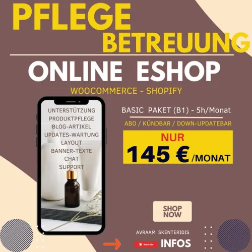

Eshop und Webseite: Pflege - Betreuung - Unterstützung " Bas
Produktprofil · Marktplatz-Daten 2026-10-13 · Verkaufsseiten-Recherche 2026-10-13 · Kategorien: Business & Investment, Services, Marketing Services
- Eshop und Webseite: Pflege - Betreuung - Unterstützung " Bas ist ein/e Elektronische Dienstleistung in Business & Investment und Services, vertrieben über den Digistore24-Marktplatz von Anbieter Skenteridis, gelistet seit 2025-11-24.
- Listenpreis $162.12; Digistore24 meldet — Checkout-Konversion, — Stornierungsquote und 30 % Affiliate-Provision.
- Verdienst pro Verkauf (Affiliate): $48.64 (Anbieter-seitige Statistik, keine Prognose).
Interesse an Eshop und Webseite: Pflege - Betreuung - Unterstützung " Bas? Aktueller Preis, Boni und Garantiebedingungen finden Sie auf der offiziellen Seite des Anbieters:
Offizielle Verkaufsseite ansehen
Affiliate-Link (Werbung) — wir verdienen ggf. eine Provision, ohne Mehrkosten für Sie.

Marktplatz-Daten
| Produkttyp | Elektronische Dienstleistung |
|---|---|
| Preis | $162.12 (Subscription) |
| Affiliate-Provision | 30 % |
| Garantie/Rückgabe | Laut Verkaufsseite des Anbieters — vor dem Kauf auf der offiziellen Seite prüfen |
| Anbieter | Skenteridis (gelistet seit 2025-11-24) |
| Marktplatz-Statistiken* | Checkout-Konversion — · Stornoquote — · Verdienst/Verkauf $48.64 |
* Anbieter-seitige Statistiken von Digistore24; sie hängen von der Traffic-Qualität ab und sind keine Prognose.
Marktplatz-Beschreibung des Anbieters
PFLEGE / BETREUUNG ” Professionelle – Unterstützung “ WooCommerce – Shopify – WordPress Mit 145 € / Monat (Paket B1 (5h)) ABO / Kündbar / Down-Updatebar ERSTELLEN & PFLEGE (Paket DE-Eshop-Pflege-B1-5h = 5Stunden/Monat) ABO / Kündbar / Down-Updatebar #0 Pflege/Betreuung/Unterstützung : bis 5 Stunden/Monat #1 Regelmäßige Software-Updates (Plugins, Themes) #2 Monatlicher Status-Report mit Übersicht über alle Arbeiten #3 Beratung zu Verbesserungen in Design, Struktur, Marketing #4 Produkteinstellungen und ähnliche Dienstleistungen #5 Monitoring ShopFunktionen (Bestellabläufe,Zahlungen usw) #6 SEO-Pflege – laufende Suchmaschinenoptimierung #7 Inhaltsaktualisierung (Produkte, Texte, Bilder etc.) #8 Optimierung für mobile Geräte – Tests Anpassungen #9 Überwachung der Server-Performance und Hosting #10 Blog-Artikel mit KI, Banner, Chat Support #11 Pages erstellen: Websites, Eshops,Landingpages usw Schauen Sie hier unsere Infos & Video, was können wir für Euch tun sehr günstig
Von der Verkaufsseite des Anbieters
Seitentitel: Webseite-eshop-pflege-unterstuetzung-guenstig-digistore24-landing - Robotics Marketing AI Workflows
Hauptüberschrift
ESHOP - WEBSEITE
PFLEGE / BETREUUNG
Abschnitts-Überschriften
- RISIKOSICHER
- RATENZAHLUNGEN MÖGLICH
- MEINE DIESTLEISTUNGEN UND PRODUKTEN
- Testimonials 2025
- Was sagen Kunden
Einstiegstext
Weil dein Online-Shop ein lebendes System ist. Plugins, Themes und Shop-Software (z. B. WooCommerce oder Shopify) werden ständig aktualisiert. Ohne regelmäßige Pflege riskierst du Sicherheitslücken, Ausfälle oder Kompatibilitätsprobleme. Regelmäßige Wartung hält deinen Shop schnell, sicher und verkaufsstark.
Ich übernehme alle inhaltlichen Aufgaben – von Updates und Backups über SEO-Pflege bis hin zu Optimierungen im Design oder bei der Performance. 👉 Eine vollständige Übersicht findest du in meinen Pflege-Leistungen auf dieser Seite.
Ja, absolut! Ich betreue sowohl WooCommerce-Shops (WordPress) als auch Shopify-Stores . Beide Systeme haben ihre eigenen Besonderheiten – ich kenne die Unterschiede und passe meine Betreuung individuell an dein Setup an.
Ich biete faire, transparente Monatspakete an – angepasst an den Umfang deines Shops oder deiner Website. Es gibt keine versteckten Kosten . Nach einer kurzen Analyse deines Projekts erhältst du ein individuelles, fixes Angebot.
Fragen, die die Verkaufsseite beantwortet
- Hast du noch Fragen - bevor den Kauf ?
Recherche-Methode: rohes HTML · 2149 Wörter · Qualität: rich · recherchiert am 2026-10-13. Vollständige Recherche-Datei (MD) ↗
Wie Produkte dieser Art geliefert werden
Allgemeiner Hinweis zu diesem Produkttyp (keine anbieterspezifische Anleitung): Remote-Dienstleistungen werden elektronisch erbracht — der Anbieter meldet sich nach dem Kauf. Für die genaue Anwendung von Eshop und Webseite: Pflege - Betreuung - Unterstützung " Bas sind die offizielle Verkaufsseite und die enthaltenen Materialien maßgeblich.
Weitere Bilder (von der Verkaufsseite des Anbieters)
Bilder stammen von der offiziellen Verkaufsseite des Anbieters und zeigen das Produkt, wie es beworben wird.
Gut zu wissen
- Keine Garantie-Formulierung in unserer Recherche gefunden — bestätigen Sie das Rückgabefenster auf der offiziellen Seite, bevor Sie kaufen.
- Hinweise der Verkaufsseite (wörtlich, nicht von uns geprüft): „Einfach und direkt – per E-Mail, WhatsApp oder Telefon. Ich melde mich proaktiv bei wichtigen Updates oder Problemen und schicke dir regelmäßig Statusberichte ."
- Hinweise der Verkaufsseite (wörtlich, nicht von uns geprüft): „Eine Onepage, wie das Wort sagt ist uur eine Seite. Hat fast alles wichtige in Kürze. Damit Sie besser verstehen gibt keine Weitere Seiten in Menu. Die Menus falls es in eine Onepage Webseite gibt, gehen in die gleiche Seite auf die entsprechende Units, also Teil dieser Webseite."
- Hinweise der Verkaufsseite (wörtlich, nicht von uns geprüft): „Ich erstelle für dich einen voll funktionsfähigen Shopify E-Shop , komplett eingerichtet und startbereit. Dazu gehört das Setup, die Einrichtung des Designs, 50-100 Produkte, Zahlungsmethoden, Versand, rechtliche Seiten und alle wichtigen Grundeinstellungen. Die Basic Shopify Eshop wird mit einen von die kostenlosen Themes erstellt."
- Marktplatz-Zahlen (Preis, Provision, Konversion, Stornoquote) — Quelle: offizielle Digistore24-Marktplatz-API (Affiliate-Sicht), Stand 2026-10-13. Gegenprüfung: Marktplatz-Suche nach Produkt-ID 650787.
- Verkaufsseiten-Zitate — Quelle: https://robotics-marketing.com/de-landing/webseite-eshop-pflege-unterstuetzung-guenstig-digistore24-landing/, abgerufen 2026-10-13 (Methode: rohes HTML). Verify: offizielle Seite öffnen.
- Garantie / Rückgabe — vom Anbieter festgelegt; vor dem Kauf auf der Verkaufsseite bestätigen.
- Nicht von uns geprüft: Produktqualität, Ergebnisse, Testimonials — kein Praxistest für dieses Listing durchgeführt.
Häufige Fragen zu Eshop und Webseite: Pflege - Betreuung - Unterstützung " Bas
Antworten aus dem Marktplatz-Snapshot (2026-10-13) und der Verkaufsseiten-Recherche (2026-10-13); Anbieteraussagen sind inline gekennzeichnet.
Was ist Eshop und Webseite: Pflege - Betreuung - Unterstützung " Bas?
Eshop und Webseite: Pflege - Betreuung - Unterstützung " Bas ist ein Angebot des Typs „Elektronische Dienstleistung" im Digistore24-Marktplatz, Anbieter: Skenteridis, gelistet seit 2025-11-24. Eingepflegt unter Business & Investment und Dienstleistungen. Digistore24 wickelt Checkout, Lieferung und Rückgaben ab.
Wie viel kostet Eshop und Webseite: Pflege - Betreuung - Unterstützung " Bas?
Der Digistore24-Marktplatz listet es für $162.12 (subscription). Preise legt der Anbieter fest und können sich ändern — der Marktplatz-Eintrag oben zeigt den Schnappschuss; die offizielle Verkaufsseite zeigt den aktuellen Preis.
Gibt es eine Geld-zurück-Garantie für Eshop und Webseite: Pflege - Betreuung - Unterstützung " Bas?
Unsere Verkaufsseiten-Recherche hat keine explizite Garantie-Formulierung gefunden. Viele Digistore24-Produkte bieten 60 Tage Geld-zurück, aber das legt jeder Anbieter selbst fest — bestätigen Sie es auf der offiziellen Verkaufsseite, bevor Sie kaufen.
Ist Eshop und Webseite: Pflege - Betreuung - Unterstützung " Bas seriös?
Wir bewerten keine Seriosität — wir veröffentlichen überprüfbare Zahlen: Anbieter Skenteridis (gelistet seit 2025-11-24), Checkout-Konversion —, Stornoquote —, Affiliate-Verdienst/Verkauf $48.64 (alles Anbieter-seitige Marktplatz-Statistiken). Lesen Sie unsere 6-Punkte-Bewertungsmethode und entscheiden Sie anhand der Zahlen — oder diskutieren Sie Eshop und Webseite: Pflege - Betreuung - Unterstützung " Bas auf GitHub.
Wo kann ich Eshop und Webseite: Pflege - Betreuung - Unterstützung " Bas sicher kaufen?
Nur über die offizielle Verkaufsseite, die auf dieser Seite verlinkt ist (Checkout und Rückgaben laufen über Digistore24). Prüfen Sie dort Preis und Garantie vor der Bestellung. Der Link ist ein Affiliate-Link — der Kauf unterstützt diese Website ohne Mehrkosten für Sie.
Wie erhalte ich Eshop und Webseite: Pflege - Betreuung - Unterstützung " Bas nach der Zahlung?
Der Checkout läuft über Digistore24: Nach der Zahlung erhalten Sie Zugangsdaten und Ihr Abo-Dashboard. Lieferdetails für diesen Produkttyp: Remote-Dienstleistungen werden elektronisch erbracht — der Anbieter meldet sich nach dem Kauf. Bei Problemen kann der Digistore24-Käufersupport Ihre Bestellung wiederherstellen.
Alle 50 Käuferfragen zu Business & Investment — das komplette Kategorie-FAQ.
Eshop und Webseite: Pflege - Betreuung - Unterstützung " Bas auf Reddit diskutieren
In Community-Threads vergleichen echte Käufer Erfahrungen. Wir verlinken Communities, keine einzelnen Posts — Threads verschwinden, Subreddits bleiben:
- r/Finanzen — deutschsprachige Community mit Diskussionen zu business & investment.
- Reddit-Suche nach „Eshop und Webseite: Pflege - Betreuung - Unterstützung " Bas" — Live-Ergebnisse, von uns nicht beeinflusst.
- Top-„Erfahrungs"-Treffer dieses Jahr — selbst nach Aktualität filtern.
Passendes auf Amazon.de
Physische Produkte und Zubehör, die häufig zusammen mit Eshop und Webseite: Pflege - Betreuung - Unterstützung " Bas gekauft werden:
- Marketing Bücher auf Amazon.de — Top-Ergebnisse, Amazon-Ranking.
- Bestseller: Marketing Bücher — live Liste von Amazon, von uns nicht kuratiert.
Werbung: Als Amazon-Partner verdient DigistorePicks DE an qualifizierten Käufen (Partner-tag adminstorede-21). Amazon setzt eigene Preise und Provisionen (niedrige einstellige Prozente — weit unter den 30–75% der Digistore24-Anbieter). Amazon ist ein Convenience-Angebot für Sachprodukte, kein Ersatz für das digitale Produkt oben.
Ähnliche Angebote in Business & Investment

SHOWUP 3 Monate Strategie- und Umsetzungsbegleitung für dein Business. Du steckst Zeit und Arbeit in deinen Content, feilst an Angeboten und denkst über deine P

Bewerbe die Nummer #1 Online NFT & Web3 Masterclass für NFT & Web3 Investoren und Anleger. Beschreibung: Eine Masterclass. Eine Plattform. Alles dabei.

498,50 € Provision pro Verkauf – plus Folgeprovisionen Du schickst den Interessenten. Unser professioneller Nachfolge-Workshop übernimmt den Verkauf. Thema: Imm

Verdiene 50% Provision mit der #1 Masterclass für Online-Kurs-Business Promote das kostenlose Online Training „Online Kurse erstellen und passiv verkaufen mit K
Weitere Angebote von Skenteridis
Gesamtes Sortiment: Skenteridis Anbieter-Hub — alle Listings mit Marktplatz-Daten.

Professionelle ESHOP erstellen ” mit WP WooCommerce“ Nur mit 2.499 € Basic Paket #0 Eshop in Woocommerce or Shopify erstellen mit kostenlosen Themes #1 Eshop is

ESHOP ERSTELLEN voll funktionsfähigen ” Professionelle Basic Shopify Eshop “ Nur mit 1.799 € #1 Eshop in Shopify erstellen voll funktionsfähig #2 Verknüpfen mit

FULLPAGE WEBSEITE ERSTELLEN ” 5-10 Page “ Nur mit 899 € #1 Alles Wichtige in 5-10 Seiten Responsive Seite #2 Nach Ihre Bedürfnisse. Fotos,Texte,Videos #3 Dienst

AUTOMATISIERTE TRUST-MARKETING & REPUTATION MARKETING ERSTELLEN ICH ERSTELLE IHRE DIGITALE AUTOMATISCHE per EMAIL BEWERTUNGS-KAMPAGNE „Mehr positive Bewertu
Eshop und Webseite: Pflege - Betreuung - Unterstützung " Bas ist auch gelistet in
Dienstleistungen (100 Produkte) · Marketing-Dienstleistungen (297 Produkte)
Ähnliche Preislage in Business & Investment

Verdiene jetzt monatlich wiederkehrende, hohe Provisionen mit der Schmiede für automatisiertes Einkommen Biete deinen Kontakten eine geniale Möglichkeit, sich e

THE FUTURE SELF – Persönlichkeitsentwicklung neu gedacht Ein neuartiges KI-Produkt an der Schnittstelle von Persönlichkeitsentwicklung, Identität und Zukunft. T

⭐ Der Verkaufshit: Simple Lead Machine Bewirb unser einsteigerfreundliches Online-Kurs-System im Bereich Affiliate-Marketing & Online Geld verdienen und ver
Ähnliche Suchanfragen
Wo Sie es sich ansehen können
Wo Sie es sich ansehen können
Aktuelle Preise, Garantie und Boni finden Sie auf der offiziellen Verkaufsseite:
Offizielle Verkaufsseite ansehen
Das ist ein Affiliate-Link (Werbung) — kaufen Sie darüber, verdienen wir ggf. eine Provision, ohne Mehrkosten für Sie.
Quellen & weiterführende Informationen
- Offizielle Verkaufsseite (aktueller Preis, Garantie, Boni): robotics-marketing.com/de-landing/webseite-eshop-pflege-unte (Affiliate-Link)
- Öffentliche Digistore24-Produktseite: digistore24.com/product/650787
- Vollständige Recherche-Datei (Markdown, versioniert): content/products/54780-eshop-und-webseite-pflege-betreuung-unterst-tzung-bas.md
- Affiliate-Supportseite des Anbieters: robotics-marketing.com/de-landing/affiliate-partner-webdesig
- Marktplatz-Kategorie: Business & Investment
Wie wir Produkte wie Eshop und Webseite: Pflege - Betreuung - Unterstützung " Bas bewerten
Sechs Prüfungen, ausschließlich mit offiziellen Marktplatz-Zahlen. Die vollständige Bewertungsmethode lesen · unsere Recherche-Standards & Kennzeichnung.
Fragen oder eigene Erfahrungen mit Eshop und Webseite: Pflege - Betreuung - Unterstützung " Bas?
Praxis-Tests veröffentlichen wir erst, nachdem wir ein Produkt selbst gekauft haben — aber Ihre Erfahrung hilft anderen Lesern: Diskussion zu Eshop und Webseite: Pflege - Betreuung - Unterstützung " Bas auf GitHub starten/verfolgen. Falsche Zahl gefunden? Korrektur melden — jede Seite zeigt ihre Datenstände, Korrekturen gelten für die ganze Website.